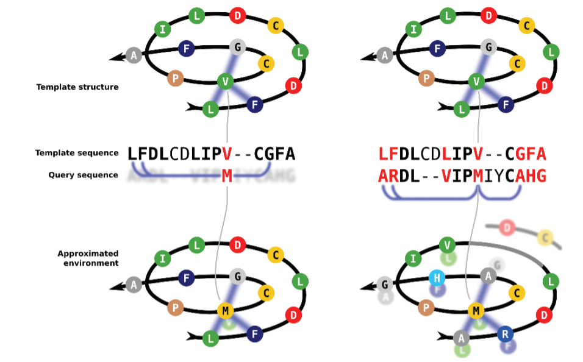
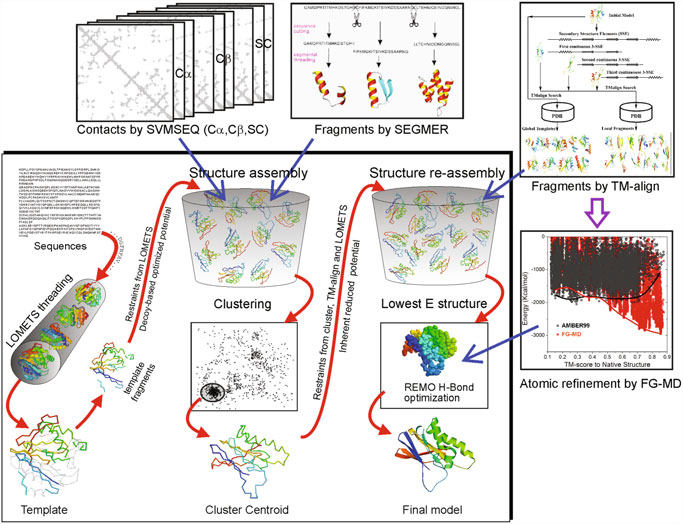
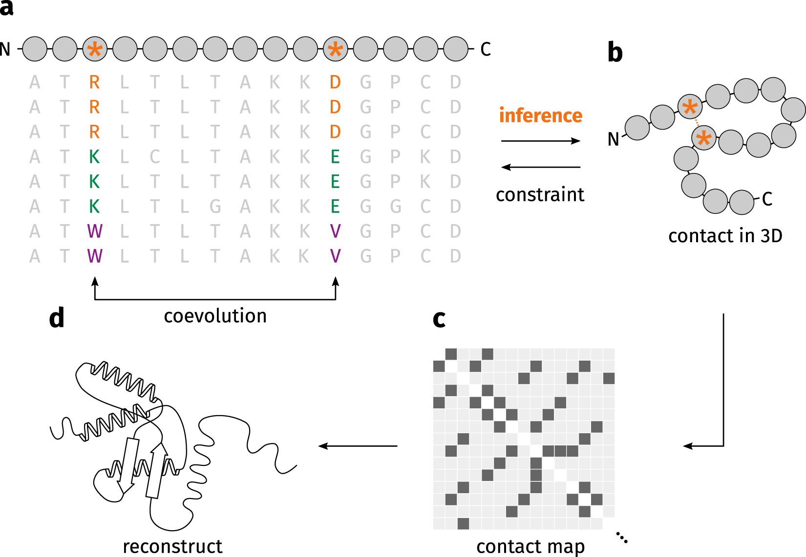
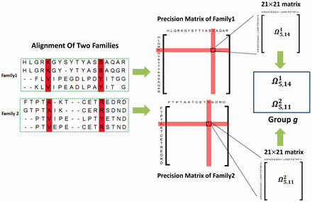

Advanced homology modeling
1 From homology modeling to threading
Although we do not intend to describe in detail the evolution of modeling methods, I briefly outline below the origin and transformation of advanced protocols that outperform the classical single-template homology modeling during the last three decades. This step-wise evolution of modeling methods is the origin of the revolution of Alphafold and related protocols, which we will discuss in the next section.
Threading or Fold-recognition methods
As mentioned earlier, the introduction of HMM-based profiles during the first decade of this century led to a great improvement in template detection and protein modeling in the twilight zone, i.e., proteins with only distant homologs (<25-30% identity) in databases. In order to exploit the power of HMM searches, those methods naturally evolved into iterative threading methods, based on multitemplate model construction, implemented in I-TASSER (Roy, Kucukural, and Zhang 2010), Phyre2 (L. A. Kelley et al. 2015), and RosettaCM (Song et al. 2013), among others. These methods are usually referred to as Threading or Fold-recognition methods. Note that the classification of modeling methods is often blurry. The current version of SwissModel and the use of HHPred+Modeller already rely on HMM profiles for template identification and alignment; being thus strictly also fold-recognition methods.
Both terms can be often used interchangeably, although some authors see Fold-Recognition as any technique that uses structural information in addition to sequence information to identify remote homologies, while Threading would refer to a more complex process of modeling including remote homologies and also the modeling of pairwise amino acid interactions in the structure. Therefore, HHPRED is a fold-recognition method and its use along with Modeller, could be indeed considered threading.

The Iterative Threading ASSembly Refinement (I-TASSER) from Yang Zhang lab is one of the most widely used threading methods and servers. This method was was ranked as the No 1 server for protein structure prediction in the community-wide CASP7, CASP8, CASP9, CASP10, CASP11, CASP12, CASP13, and CASP14 experiments. I-TASSER first generates three-dimensional (3D) atomic models from multiple threading alignments and iterative structural assembly simulations that are iteratively selected and improved. The quality of the template alignments (and therefore the difficulty of modeling the targets) is judged based on the statistical significance of the best threading alignment, i.e., the Z-score, which is defined as the energy score in standard deviation units relative to the statistical mean of all alignments.

First, I-TASSER uses Psi-BLAST against curated databases to select sequence homologs and generate a sequence profile. That profile is used to predict the secondary structure and generate multiple fragmented models using several programs. The top template hits from each threading program are then selected for the following steps. In the second stage, continuous fragments in threading alignments are excised from the template structures and are used to assemble structural conformations of the sections that aligned well, with the unaligned regions (mainly loops/tails) built by ab initio modeling. The fragment assembly is performed using a modified replica-exchange Monte Carlo random simulation technique, which implements several replica simulations in parallel using different conditions that are periodically exchanged. Those simulations consider multiple parameters, including model statistics (stereochemical outliers, H-bond, hydrophobicity…), spatial restraints and amino acid pairwise contact predictions (see below). In each step, output models are clustered to select the representative ones for the next stage. A final refinement step includes rotamers modeling and filtering out steric clashes.
One interesting thing about I-TASSER is that it is integrated within a server with many other applications, including some of the tools that I-TASSER uses and other advanced methods based on I-TASSER, like I-TASSER-MTD for large, multidomain proteins or C-I-TASSER that implements a deep learning step, similar to Alphafold2 (see next section).

RosettaCM is an advanced homology modeling or threading algorithm by the Baker lab, implemented in Rosetta software and the Robetta webserver. RossetaCM provides accurate models by breaking up the sequence into fragments that are aligned to a set of selected templates, generating accurate models by a threading processes that uses different fragments from each of the templates. Additionally it uses minor ab initio folding to fill the residues that could not be assigned during the threading. Then, the model is closed by iterative optimization steps that include Monte Carlo sampling. Finally, an all-atom refinement towards a minimum of free energy (Song et al. 2013).
De novo or ab initio modeling used to mean modeling a protein without using a template. However, this strict definition is blurred in the 2000s (decade) by advanced methods that use fragments. Threading protocols such as RosettaCM and I-Tasser, among others, use fragments that may or may not come from homologous protein structures or not. Therefore, they cannot be classified as homology modeling, but they are sometimes referred to as comparative or hybrid methods.
2 From contact maps to pairwise high-res feature maps
A protein contact map represents the contacts between all possible amino acid residue pairs of a given protein sequence in the three-dimensional structure. It is represented as a binary (0,1) matrix with n rows and columns, being n the number of residues of the sequence. Thus, for two residues, i and j, the ij element of the matrix is 1 if the two residues are in contact in the structure. In practical terms, the contact is defined as when the residues are closer than a specified threshold. In the examples on Figure 8, the threshold is 9 Å. Note that the pattern in the map clearly show differences between motifs and somehow reflex secondary structure stretches.

An accurate information of protein’s residue–residue contacts is sufficient to elucidate the fold of a protein (Olmea and Valencia 1997); however implementation of these maps in protein modeling is not trivial, as predicting that map is not always easy. The introduction of direct-coupling analysis (DCA), i.e., extract the residue coevolution from MSAs (Figure 9) improved contact maps and allowed their implementation for protein folding in several methods, like PSICOV (Jones et al. 2012) or Gremlin (Kamisetty, Ovchinnikov, and Baker 2013), among others. However, it should be noted for proteins without many sequence homologs, the predicted contacts were of low quality and insufficient for accurate contact-assisted protein modeling.

Implementation of several layers of information processed by neural network and deep learning methods
Deep learning is a sub-field of machine learning which is based on artificial neural networks (NN). Neural networks were introduced actually in the late 40’s and 50’s, but they reappeared in the 2000’s thanks to the increase in computational capacities and, more recently, the use of GPUs. Briefly, a NN uses multiple interconnected layers to transform multiple inputs (MSAs, high-resolution contact-based maps…) into compound features that can be used to predict a complex output, like a 3D protein structure. As their name indicates, NNs attempt to simulate the behavior of the human brain that processes large amounts of data and can be trained to “learn” from that data. Deep learning is based on the use of multiple layer-NN to optimize and refine for accuracy.

The next level of complexity in contact maps is their application to distantly related proteins by comparing sets of DCA from different protein families, a method sometimes referred as joint evolutionary coupling analysis (Figure 10). This kind of analysis entails processing a huge amount of information, which increases the computational resources requirements. Thus, the use of trained neural networks and state-of-the-art deep-learning methods boosted the capacities of protein modeling.
In this context, the introduction of supervised machine learning methods that predict contacts, outperforms DCA methods by the use of multilayer neural networks (Jones et al. 2015; Ma et al. 2015; Wang et al. 2017; Yang et al. 2020). These methods implemented the use of the so-called high resolution contact maps (Figure 11), which contains enriched information with not only contacts but also distances, and angles, represented in a heatmap-like probability scale.